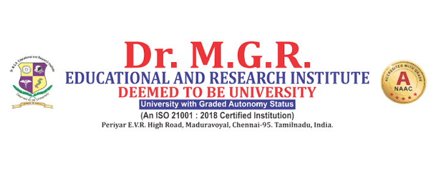

Dr. M.G.R. Educational and Research Institute in Maduravoyal
, Chennai, is a leading deemed university. Founded in 1988, it offers
programs in engineering, medicine, dentistry, and management. The campus features a hospital, modern
labs, and digital classrooms to help students succeed in their future careers.The university is in
the
Maduravoyal area of Chennai. It is officially recognized by the UGC and the AICTE. The main campus
spans
about 30 acres. It has a large 800-bed multi-super specialty hospital. The campus also has a strong
focus on research.